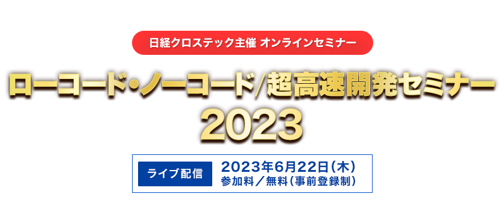

お申し込み受付を
終了しました
ビジネスを取り巻く環境が目まぐるしく変化する中、急激な変化への対応が強く求められる現代。デジタルで企業を変革する「DX」をいかに推進するかが企業にとってますます重要になっています。
DXを推進するうえで不可欠な要素となるのがシステム開発力です。
そこで注目を集めているのが「ローコード/ノーコード開発」です。
米調査会社のGartnerによると、2026年にはローコード開発製品の市場規模が445億ドルに達すると予測しています。企業は企業間の競争を勝ち抜くためにも、ビジネスプロセスの最適化を行い、開発ツールやプラットフォームの導入を進めていくことになります。
そして、効果的に導入するためには、ローコード/ノーコードはもちろん、開発プロセス全体を高速化する超高速開発に最適なツール/手法を選定することが肝要です。
しかし、数多くのツール/手法から自社に合うものを選択することは容易ではなく、課題として残っている企業もまだ多いと言えます。
このような背景のもと、日経クロステックでは『ローコード・ノーコード/超高速開発セミナー 2023』を開催します。
本セミナーは、成果を上げている企業の事例や戦略を多数紹介するだけでなく、それを可能にしたツール/手法も解説し、 ローコードやノーコード、あるいは超高速開発の導入を具体的に支援するものです。
是非、本セミナーを視聴し、貴社のシステム開発のヒントを得てください。
ご講演終了後に主催者アンケートがございます。
ご回答頂きました方の中から抽選で100名様に
「Amazonギフト券（1,000円分）」をプレゼントさせて頂きます。
ぜひ最後までご視聴ください。
本セミナーはオンラインセミナー（Live配信）です。
開催概要
- 名称
- ローコード・ノーコード/超高速開発セミナー 2023
- 日程
-
2023
年
6
月
22
日（木）
10：00～16：30（予定）
- 開催形式
- オンライン（ライブ配信型 Webセミナー）
- 主催
- 日経クロステック
- 協力
- 日経コンピュータ
- 協賛
-
- アステリア、
- キヤノンITソリューションズ、
- サイボウズ、
- デル・テクノロジーズ、
- グレープシティ、
- インテリジェント・モデル、
- エヌ・ティ・ティ・データ・イントラマート、
- スパイラル
- （ABC順）
- ※パイプドビッツは、6月1日から社名をスパイラルに変更しました。
- 参加料
- 無料（事前登録制）
プログラム
※講演者や講演時間など、プログラムは変更になる場合がございます。予めご了承ください。
-
10:00～10:30
-
【基調講演】
変革を起こす営業プロセスへの進化～自らが、作り、育て、変えていく、社内DXの具体化～
コニカミノルタジャパン
営業推進統括部 マーケティングセンター センター長長井 隆宏 氏企業を取り巻く環境はより一層複雑化している中、「DX」というキーワードを掲げて、社内変革に取り組む企業が多く存在します。当社もそのうちの一つ。 では、変革を起こす「DX」とは何なのか？真の意味での「DX」とは？ 約2年前より 営業現場自らが主体となり取り組んできた変革プロジェクト。背景や目的、導入と実装、運用、効果など、どのようにしてプロジェクトを進めてきたかの実践事例をご紹介いたします。
-
10:35～11:05
-
【ソリューション講演】
脱・分散管理！Forguncyで始めるDXとデータの一元化

グレープシティ
Enterprise Solutions事業部 マーケティング部 Forguncyプロダクトマーケティング七野 瞳 氏DXを進めたいが、業務データは部署ごとにExcelでバラバラに管理しており、システム化するには時間もお金もかかりそう……。そんなお悩みを持つ方に、データ一元化のメリットや、今の業務でお使いのExcelを活用しつつノーコードツールで一元化を実現し業務改善に成功した事例をご紹介いたします。
-
11:10～11:40
-
【ソリューション講演】
ユーザー主導の業務改善を実現するノーコードツール活用法〜データ活用につながる、現場業務のデジタル化と業務自動化〜
アステリア
マーケティング本部 副本部長東出 武也 氏DXを推進する上で、既存業務の改善やシステムの整備、IT人材の確保など課題は山積みです。これらの課題を月額数万円〜の低コストで解決し、アナログ業務のデジタル化からシームレスなシステム連携、業務自動化、データ活用までを実現する「Platio」「ASTERIA Warp」について、事例とデモを交えてご紹介します。
-
11:45～12:15
-
【ソリューション講演】
守りながら攻める！
ローコードツールのDX活用におけるガバナンスと人材育成の考え方
サイボウズ
執行役員 営業本部 エリア統括 兼 ソリューション統括玉田 一己 氏ビジネス環境の急激な変化に柔軟に対応するためのシステム基盤の整備が求められるなか、ツールをどのように管理していくか、DX人材をどう育成していくか悩む声を聞くこともあります。本セッションでは、ローコードツールを活用した運用ルールの作り方や、DX人材育成におけるローコードツールの活用方法について、kintoneを利用した事例をもとにご紹介します。
-
お昼休憩
-
13:00～13:30
-
【特別講演】
業務効率化しないなんてもったいない！花王流ローコード開発推進の軌跡と成果

花王
DX戦略部門 マネージャー山崎 大輔 氏花王では、DX戦略の実現には「現場の課題やニーズを理解し、自ら業務プロセス革新に取り組める社員」が重要であることを強く認識しており、全社視点で積極的に支援する取り組みを始めています。インターナルＤＸを促進する上で欠かせない、推進プロジェクトの役割や活動内容、及びその成果について具体的にご紹介します。
-
13:35～14:05
-
【ソリューション講演】
元大手ベンダー部長が語る超高速開発ツールとは～汎用機からの移行 35年の経験より～
インテリジェント・モデル
ソリューション開発部 執行役員喜田 巧 氏大手ベンダーでは、システムを「高精度・短納期・低コスト」で開発することを目指し、主に自社ツールを活用しています。 そのような中、ベンダー間の垣根を越えて活用されているノーコード開発ツール「ODIP」について、活用事例を交えてご紹介をいたします。
-
14:10～14:40
-
【ソリューション講演】
内製化の駆動力となる新たなローコード開発～18年の知見から～
キヤノンITソリューションズ
デジタルビジネス営業本部 事業企画部 戦略企画課 課長高橋 宏明 氏業務のデジタル化を俊敏かつ柔軟に実現するため、多くの企業が採用を始めている「ローコード開発」。キヤノンITSは2005年よりローコードビジネスに取り組み、今年1月に新サービス「WebPerformer-NX」をローンチしました。本セッションでは、このサービスを活用して実現可能な「内製でのデジタル化」についてご紹介いたします。
-
14:45～15:15
-
【ソリューション講演】
業務の自動化まで実現するローコード開発とは？

エヌ・ティ・ティ・データ・イントラマート
上席執行役員 経営戦略室室長 兼 セールス＆マーケティング本部 本部長橋場 雅 氏企業をとりまくビジネス環境の急速な変化に伴い、柔軟かつスピーディなシステム開発が求められています。ローコード開発はそれ自体が目的ではなく、その先のシステム化による業務の効率化・自動化が一つのゴールです。本セッションでは、「業務の自動化までできるローコード開発」をキーワードに、システム部門とビジネス部門の協創によるアジャイル開発の事例等を交えてDX推進のヒントを解説します。
-
15:20～15:50
-
【ソリューション講演】
～成功事例から学ぶ！～ローコード開発で「顧客接点DX」を加速させる方法
スパイラル（パイプドビッツ）
上席執行役員
マーケティング本部長小西 辰也 氏「社内業務の効率化は進んでいるが、Web サイトやスマートフォンを活用した顧客接点業務の効率化が進んでいない・・・」
このような課題を持ちではないでしょうか？セキュリティ、アクセス集中、柔軟なUI など、顧客接点のシステムに求められる要件に対応しながらDX を推進する方について成功事例を交えてご紹介します。
-
16:00～16:30
-
【特別講演】
ローコード・ノーコードの最新潮流を読む
日経BP
技術プロダクツユニット 編集委員中村 建助ローコード・ノーコード開発が確実に普及している。導入の狙いはどこにあり、どの領域に使い、どういったメリットを感じるのか。急速に関心を集める生成AI（人工知能）も今後に影響を与える。現状と今後を見据えながら、企業はどうローコード/ノーコードに向き合うかを考える。
お申し込み
■視聴環境事前ご確認のお願い
Webセミナー【ライブ配信】ご参加にあたり、「視聴環境チェックサイト」での動作確認をお願いしております。音声および動画が正常に受信できるかを、下記「視聴環境チェックサイト」へアクセスしていただきご確認ください。
なお、お客様がご使用のパソコンおよび通信環境によってはWebセミナー【ライブ配信】にご参加いただけない場合がございますので、あらかじめご了承ください。
▼視聴環境チェックサイト（PC・スマートフォン）
https://ondemand.seminar.vcube.com/checker/videostream
※チェックサイトで視聴に問題がある場合は、まずセミナーの推奨環境に合っているかをご確認ください。
▼セミナー推奨環境(ビデオストリーミング配信の「受講者」の項目をご確認ください)
https://jp.vcube.com/support/requirements/req_seminar.html
※受講者側で推奨しているPCブラウザ・OSは、以下となります。
Windowsプラウザ・・・Microsoft Edge、Mozilla Firefox、Google Chrome
Macブラウザ・・・safari
WindowsOS：Windows 11、Windows 10、Windows 8.1
MacOS：macOS 最新版
※受講者側で推奨しているスマートフォン・タブレットのブラウザ・OSは、以下となります。
iOS ・・・iOS デバイス iOS 10以上、Safari
Android・・・ Android 6以上、Google Chrome
※インターネット環境によっては視聴が出来ない場合がありますので、視聴確認サイトから、受講される環境にてテストをお願いします。
お問い合わせ
日経BP読者サービスセンターセミナー係
お問い合わせお申し込み受付を
終了しました